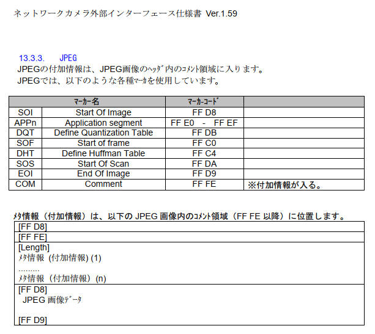
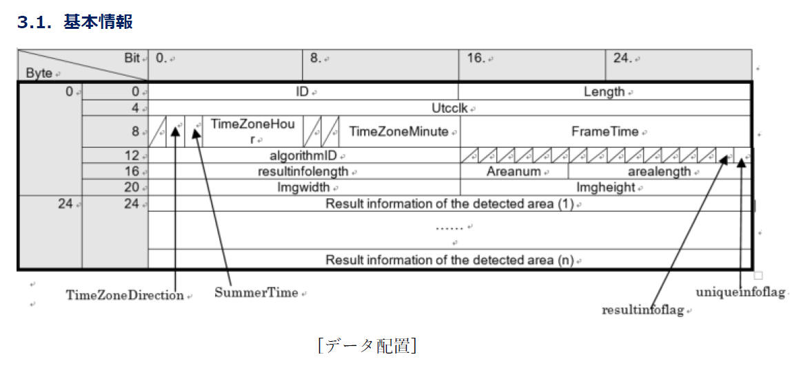
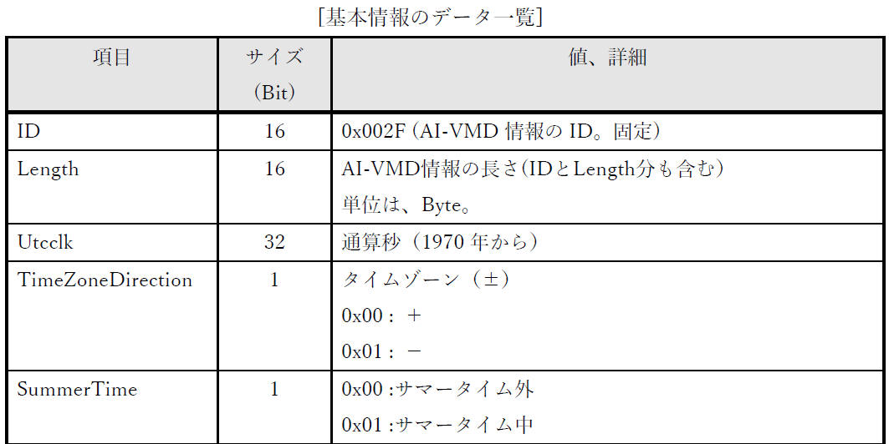
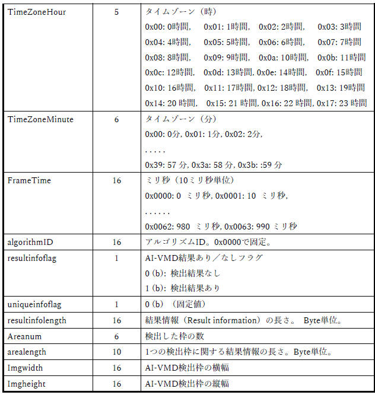
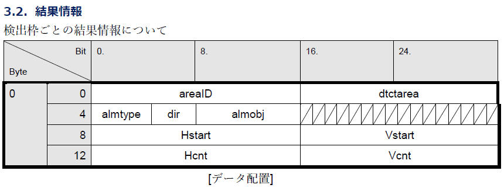
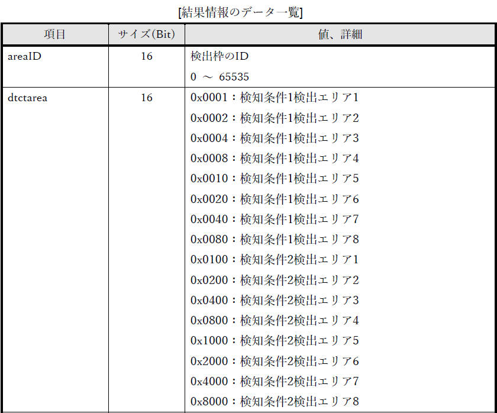
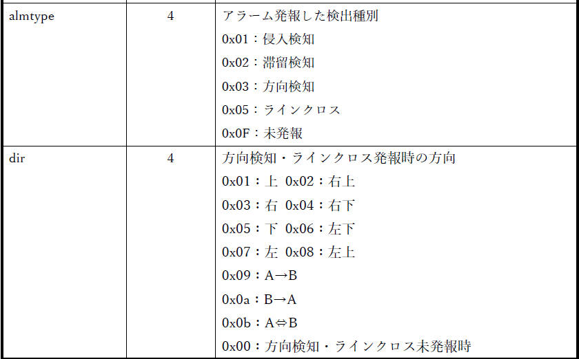
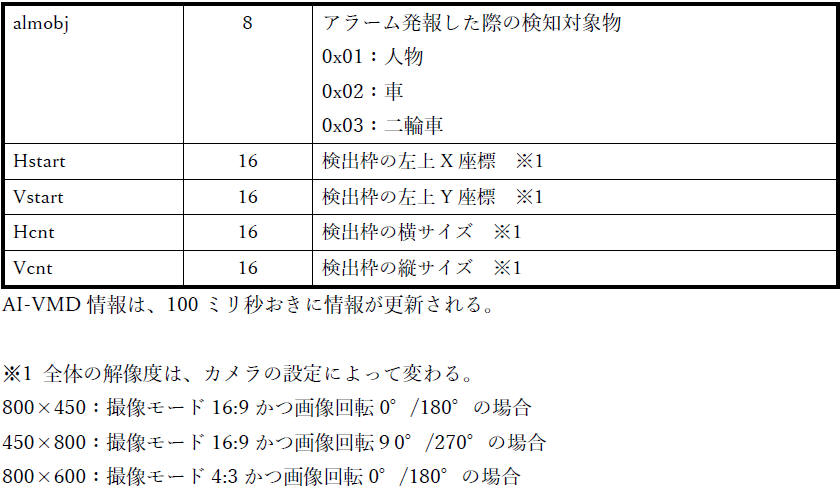
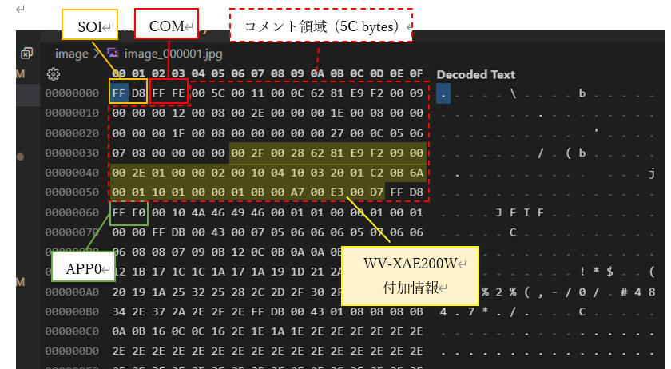
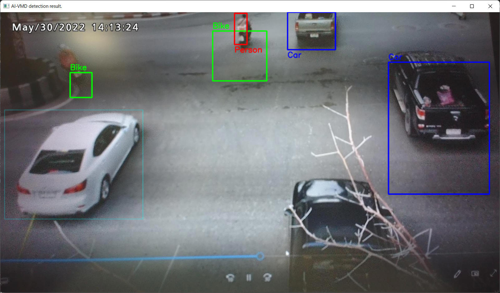

[概要]
前章で記載の通り、カメラブラウザの画面上で WV-XAE200WUX の認識結果を閲覧することができます。
しかし、i-PRO カメラから映像を受け取りPC上で映像を表示する独自のプログラムをあなたが単純に作成するだけでは、
カメラブラウザのように WV-XAE200WUX の認識結果の表示を行うことはできません。
i-PRO カメラから認識結果を受け取って認識結果を描画するプログラムを作成する必要があります。これを実現する方法について、以下で順番に説明を行っていきます。
本章では、まずは認識結果を受け取って取り出すまでについて説明します。
資料[1][4] によると JPEG, RTSP ともにパケットに AI 認識結果を記録しているようです。
私の技量では RTSP からこの情報を取り出すのは難があるので、JPEG から情報を取り出す方針とします。
JPEG
ヘッダのコメント領域に記録されているということなので、JPEG ヘッダを分析して情報を取り出してみます。
いきなりカメラと接続してチャレンジするのは大変なので、まずは静止画（JPEG）ファイルを取得し、これをバイナリエディタなどで実際のデータ構造を確認しながら方針や実現方法などを検討していきたいと思います。
[評価環境]
|
| 言語 : |
Python, |
3.10.4 |
|
| OS : |
Windows 11 home, |
21H2 |
| |
Windows 10 Pro, |
21H1 |
|
| 機能拡張ソフトウェア : |
WV-XAE200WUX, |
2.20 |
|
(1)
「JPEGで画像を取得する - 5.連番のJPEGファイルで保存する」
「MJPEGで画像を取得する - 5.連番のJPEGファイルで保存する」
に記載の方法を使って、WV-XAE200WUX を動作している状態の JPEG ファイルをPCに保存します。
(2)
資料[1][4]、JPEGファイル構造の資料[3]、
(1)で保存したファイルをバイナリエディタで表示した結果を見比べて確認などしていきます。
まずは仕様確認です。
資料[1]の「i-proカメラ外部インタフェース仕様書ver1.59.pdf - 13.3.3.
JPEG」に下図のように記載されています。

ポイント
- JPEGファイルは SOI(0xFFD8) で始まる。
- JPEGファイルは EOI(0xFFD9) で終わる。
- メタ情報（付加情報）はコメント領域に記録されている。（COM(0xFFFE)）
資料[4] の「3. 付加情報」「3.1. 基本情報」「3.2. 結果情報」で下図のように記載されています。







(3)
以上を踏まえて、実際に取得した JPEG ファイルを解析します。
下記内容は私が作成した image_000001.jpg
の例です。あなたが準備したデータとデータ構造は同じですが、具体的なデータは異なる内容となります。
[図： image_000001.jpg バイナリデータ解析結果]

WV-XAE200WUX に関係する個所に絞って記載するとポイントは以下の通りです。
ポイント
- コメント領域中に "WV-XAE200WUX 付加情報" を記録している。
- "WV-XAE200WUX 付加情報" のタグコードは "0x002F"。
- コメント領域には他の付加情報も保存されている。
- "WV-XAE200WUX 付加情報" のデータ長は、検知数に応じて変わる可変長。
[表: WV-XAE200WUX 付加情報部分を解析した結果]
| データ |
項目 |
説明 |
| 00 2F |
ID (16 bit) |
付加情報（0x002F） |
| 00 28 |
Length (16 bit) |
|
| 62 81 E9 F2 |
UtcClock (32 bit) |
UTC clock 1970年からの通算秒
0x6281E9F2 = 1,652,681,202[秒]
= 19,128[日] + 6[時間] + 6[分] + 42[秒]
⇨ 2022年5月16日、タイムゾーン(+9)を考慮すると
15時6分42秒、正しそうです。 |
| 09 |
RFU (1 bit) |
|
| TimeZoneDirection (1 bit) |
0: プラス、1: マイナス |
| SummerTime (1 bit) |
0: サマータイム外、1: サマータイム中 |
| TimeZoneHour (5 bit) |
TimeZoneHour ; 9 |
| 以上から、0x09 はタイムゾーン "+9", "サマータイム外" という意味です。 |
| 00 |
TimeZoneMinute (8 bit) |
TimeZoneMinute = 0 |
| 00 2E |
FrameTime (16 bit) |
Utcclkを補足する10msec単位のカウンタ
0x00： 0msec
0x01： 10msec
～
0x63：990msec |
| 01 00 |
algorithmID (16 bit) |
"0x0100" 固定 |
| 00 02 |
RFU (6 bit)
|
000000(b) 固定 |
| resultinfoflag (1 bit) |
結果情報（枠情報）があるかないか
0: 無し
1: あり |
| uniqueinfoflag (1 bit) |
固有情報があるかないか
0: 無し
1: あり
WV-XAE200WUX では 0 固定。未使用と同意。 |
| 以上から、0x02 は "検知結果あり" を意味します。 |
| 00 10 |
resultInfoLength (16 bit) |
結果情報（Result information）の長さ。 Byte 単位。
AreaNum *
AreaLength [bytes] と同じ値となります。
|
| 04 10 |
AreaNum (6 bit)
|
AreaNum = 1 ; 検知数 1 の意味
|
| AreaLength (10 bit) |
AreaLength = 0x10 = 16 [bytes]
16[bytes] は下記 [表: Result
information of the detected area] が示すデータサイズです。
この例では次に記載の AreaNum が 1
なので、resultInfoLength は0x10(16)バイトとなります。 |
| 03 20 |
Imgwidth (16 bit) |
画像幅
0x0320 = 800 [px] |
| 01 C2 |
Imgheight (16 bit) |
画像高さ
0x01C2 = 450 [px] |
＝＝＝ この範囲を検知した数だけ反復
[表: Result information of the detected area]
| データ |
項目 |
説明 |
| 0B 6A |
AreaID (16 bit)
|
検出枠のID (0 ～ 65,535)
0x0B6A = 2,922 |
| 00 01 |
dtctarea (16 bit)
|
エリアごとに1ビットを割り当て。
検知条件を満足するエリアのビットを '1' とする。
0x0001：検知条件1
検出エリア1
0x0002：検知条件1 検出エリア2
0x0004：検知条件1 検出エリア3
0x0008：検知条件1
検出エリア4
0x0010：検知条件1 検出エリア5
0x0020：検知条件1 検出エリア6
0x0040：検知条件1
検出エリア7
0x0080：検知条件1 検出エリア8
0x0100：検知条件2 検出エリア1
0x0200：検知条件2
検出エリア2
0x0400：検知条件2 検出エリア3
0x0800：検知条件2 検出エリア4
0x1000：検知条件2
検出エリア5
0x2000：検知条件2 検出エリア6
0x4000：検知条件2 検出エリア7
0x8000：検知条件2
検出エリア8
0x0001 ; 検知条件1 検出エリア1 で検知 |
| 10 01 |
almtype (4 bit)
|
発報した際の検出種別
0x1：侵入検知
0x2：滞留検知
0x3：方向検知
0x4：置き去り・持ち去り検知
0x5：ラインクロス検知
0xF：未発報
almtype= 1 (侵入検知)
|
| dir (16 bit) |
方向検知・ラインクロス検知で発報時の方向
0x00：方向なし（方向検知・ラインクロス未発報時）
0x01：上
0x02：右上
0x03：右
0x04：右下
0x05：下
0x06：左下
0x07：左
0x08：左上
0x10：A→B
0x20：B→A
0x30：A⇔B
dir = 0 (方向なし) |
| almobj (4 bit) |
発報した検知対象物
0x0：種別なし（almtyp が 0x4 のとき）
0x1：人物
0x2：車
0x3：二輪車
0x4：未発報（今後の発報候補。almtype が 0xF のとき）
almobj = 1 (人物) |
| 00 00 |
RFU (16 bit) |
H'0000 固定 |
| 01 0B |
hstart (16 bit) |
0x010B = 267 |
| 00 A7 |
vstart (16 bit) |
0x00A7 = 167 |
| 00 E3 |
hcnt (16 bit) |
0x00E3 = 227 |
| 00 D7 |
vcnt (16 bit) |
0x00D7 = 215 |
＝＝＝ ここまで
(注) RFU : Rest for Future Use (将来使用のための未使用領域)
(4)
ここまでの情報を踏まえて、JPEGファイルを解析して WV-XAE200WUX 付加情報を取得するプログラムを作成してみます。
(4-1) 最初に対象バイナリデータが JPEG ファイルであるかを確認する関数を作成します。
バイナリデータの先頭が SOI(0xffd8) で末尾が EOI(0xffd9) であればOKとしています。
def IsJpegFile(data):
'''
Check if data is JPEG data.
data が JPEG データであることを確認する。
Args:
data [i] Data to be confirmed.
Returns:
True Data is JPEG.
False Data is not JPEG.
Raises
None
'''
result = False
length = len(data)
if length >= 4:
SOI, = struct.unpack('>H', data[0:2])
EOI, = struct.unpack('>H', data[length-2:length])
if SOI == 0xffd8 and EOI == 0xffd9:
result = True
return result
(4-2) JPEGヘッダ情報を分析してタグを抽出する関数を作成します。
ANS.1 形式と似た TLV 構造になっているので、関数に渡されたデータ先頭から JPEG 仕様に従って Tag, Length, Value
を取り出します。
def ParseJpegHeadder(data):
'''
Get Tag, Length, Value (data_interior), the following data from JPEG header data.
JPEG ヘッダデータから Tag, Length, Value(data_interior), 次のデータ を取得する。
Args:
data [i] Data to be confirmed.
Returns:
result True: success
False: failure
tag Tag
length Length
data_interior Value. If it does not exist, it will be None.
data_next The following data after data_interior. If it does not exist, it will be None.
Raises
None
'''
result = False
tag = 0
length = 0
data_length = len(data)
data_interior = None
data_next = None
if data_length >= 4:
tag, length, = struct.unpack('>HH', data[0:4])
if tag & 0xff00 == 0xff00:
if length + 2 <= data_length:
data_interior = data[4:length+2]
data_next = data[length+2:data_length]
result = True
return result, tag, length, data_interior, data_next
(4-3) コメント領域のデータを渡すことで WV-XAE200WUX 付加情報を取得する関数を作成します。
WV-XAE200WUX データのタグは 0x002f なので、これを探します。
見つけたらこの後で記載する ParseAivmdResult 関数に渡して詳細分析を行います。
def ParseJpegComment(data):
'''
This function obtains the WV-XAE200WUX (aivmd) recognition result from the JPEG comment data.
JPEG コメントデータから WV-XAE200WUX (aivmd) 認識結果を取得する。
Args:
data [i] JPEG comment data.
Returns:
result True: success
False: failure
aivmd_result The WV-XAE200WUX (aivmd) recognition result.
Raises
None
'''
result = False
aivmd_result = None
length = len(data)
while True:
if length >= 4:
tag, data_length = struct.unpack('>HH', data[0:4])
if data_length <= length:
data_interior = data[4: data_length]
data = data[data_length:]
length -= data_length
if tag == 0x002f: # 0x002f means AI-VMD meta information.
aivmd_result = ParseAivmdResult(data_interior)
result = True
break
else:
break
else:
break
return result, aivmd_result
(4-4) 取得した WV-XAE200WUX 付加情報を渡すと詳細を分析してくれる関数を作成します。
各データを切り出しして、辞書形式にして保存します。
def ParseAivmdResult(data):
'''
This function gets the recognition result in dictionary format from the WV-XAE200WUX (AI-VMD) recognition result.
WV-XAE200WUX (AI-VMD) 認識結果から辞書形式の認識結果を取得する。
Args:
data [i] WV-XAE200WUX (aivmd) recognition result.
Returns:
result True: success
False: failure
aivmd_result the recognition result in dictionary format.
Raises
None
'''
result = {}
result['detectResult'] = []
length = len(data)
UTCClock, timeZone, timeZoneMinute, frameTime = struct.unpack('>LBBH', data[ 0: 8])
algorithmId, resultInfo, resultInfoLength = struct.unpack('>HHH', data[ 8:14])
areaInfo, imageWidth, imageHeight = struct.unpack('>HHH', data[14:20])
areaNum = (areaInfo >> 10) & 0x3f
areaLength = areaInfo & 0x3ff
timeZoneDirection = (timeZone >> 6) & 0x01
summerTime = (timeZone >> 5) & 0x01
if timeZoneDirection == 0:
timeZoneHour = + (timeZone & 0x1f)
else:
timeZoneHour = - (timeZone & 0x1f)
resultInfoFlag = (resultInfo >> 1) & 0x01
uniqueinfoflag = (resultInfo >> 0) & 0x01
result['UTCClock'] = UTCClock
result['timeZoneDirection'] = timeZoneDirection
result['summerTime'] = summerTime
result['timeZoneHour'] = timeZoneHour
result['timeZoneMinute'] = timeZoneMinute
result['frameTime'] = frameTime
result['algorithmId'] = algorithmId # 0x0100 fixed.
result['resultInfoFlag'] = resultInfoFlag # 0: detection, 1: no detection
result['uniqueinfoflag'] = uniqueinfoflag
result['resultInfoLength'] = resultInfoLength # areaNum * areaLength [bytes]
result['areaNum'] = areaNum
result['areaLength'] = areaLength
result['imageWidth'] = imageWidth
result['imageHeight'] = imageHeight
offset = length - resultInfoLength
if (algorithmId==0x0100) and (resultInfoLength == areaNum * areaLength):
for i in range(areaNum):
areaId, detectArea, alarm = struct.unpack('>HHH10x', data[offset+areaLength*i:offset+areaLength*(i+1)])
hstart, vstart, hcnt, vcnt = struct.unpack('>8xHHHH', data[offset+areaLength*i:offset+areaLength*(i+1)])
almType = (alarm >> 12) & 0x0f
direction = (alarm >> 8) & 0x0f
almObj = (alarm & 0xff)
detectResult = {}
detectResult['areaId'] = areaId
detectResult['detectArea'] = detectArea
detectResult['almType'] = almType # 1:Intruders, 2:Loitering, 3:Direction, 4:Object, 5:Cross line, 8:AI
detectResult['Dir'] = direction # 1:Up, 2:Up right, 3:Right, 4:Down right, 5:Down, 6:Down left, 7:Left, 8:Up left,
# 9:A→B, 10:B→A, 11:A⇔B
detectResult['almObj'] = almObj # 1: Person, 2: Car, 3: Bike, 4: Unknown
detectResult['hstart'] = hstart
detectResult['vstart'] = vstart
detectResult['hcnt'] = hcnt
detectResult['vcnt'] = vcnt
result['detectResult'].append(detectResult)
return result
(4-5) 以上の関数を使用して全体処理する部分を作成します。
概要説明省略、ソースコード中のコメントをご確認ください。
def ParseJpegFile(data):
'''
This function obtains the WV-XAE200WUX (aivmd) recognition results from the JPEG data.
JPEG データから WV-XAE200WUX (aivmd) 認識結果を取得する。
Args:
data [i] Data to be confirmed.
Returns:
result True: success
False: failure
aivmd_result The WV-XAE200WUX (aivmd) recognition result.
Raises
None
'''
result = False
aivmd_result = None
if IsJpegFile(data) == True:
next_data = data[2:]
while True:
result, tag, length, data, next_data = ParseJpegHeadder(next_data)
if tag == 0xffda: # SOS (Start Of Scan)
break
if result==False:
break
if tag == 0xfffe: # COM (Comment)
result, aivmd_result = ParseJpegComment(data)
break
return result, aivmd_result
if __name__ == "__main__":
'''
__main__ function.
Raises
FileNotFoundError
'''
filename = 'image_000001.jpg'
with open(filename, 'rb') as fin:
binaryData = fin.read()
result, aivmd_result = ParseJpegFile(binaryData)
if result==True:
print(aivmd_result)
else:
print('Failure.')
(4-6) 最後に、プログラム全体を示します。
["parse_jpeg.py"]
'''
[Abstract]
This program extracts the recognition result of WV-XAE200WUX (AI-VMD) from the JPEG file.
WV-XAE200WUX (AI-VMD) の認識結果を JPEG ファイルから取り出します。
[Details]
This program has been confirmed to work with WV-XAE200WUX Ver. 2.20.
[Library install]
'''
import struct
def ParseAivmdResult(data):
'''
This function gets the recognition result in dictionary format from the WV-XAE200WUX (AI-VMD) recognition result.
WV-XAE200WUX (AI-VMD) 認識結果から辞書形式の認識結果を取得する。
Args:
data [i] WV-XAE200WUX (aivmd) recognition result.
Returns:
result True: success
False: failure
aivmd_result the recognition result in dictionary format.
Raises
None
'''
result = {}
result['detectResult'] = []
length = len(data)
UTCClock, timeZone, timeZoneMinute, frameTime = struct.unpack('>LBBH', data[ 0: 8])
algorithmId, resultInfo, resultInfoLength = struct.unpack('>HHH', data[ 8:14])
areaInfo, imageWidth, imageHeight = struct.unpack('>HHH', data[14:20])
areaNum = (areaInfo >> 10) & 0x3f
areaLength = areaInfo & 0x3ff
timeZoneDirection = (timeZone >> 6) & 0x01
summerTime = (timeZone >> 5) & 0x01
if timeZoneDirection == 0:
timeZoneHour = + (timeZone & 0x1f)
else:
timeZoneHour = - (timeZone & 0x1f)
resultInfoFlag = (resultInfo >> 1) & 0x01
uniqueinfoflag = (resultInfo >> 0) & 0x01
result['UTCClock'] = UTCClock
result['timeZoneDirection'] = timeZoneDirection
result['summerTime'] = summerTime
result['timeZoneHour'] = timeZoneHour
result['timeZoneMinute'] = timeZoneMinute
result['frameTime'] = frameTime
result['algorithmId'] = algorithmId # 0x0100 fixed.
result['resultInfoFlag'] = resultInfoFlag # 0: detection, 1: no detection
result['uniqueinfoflag'] = uniqueinfoflag
result['resultInfoLength'] = resultInfoLength # areaNum * areaLength [bytes]
result['areaNum'] = areaNum
result['areaLength'] = areaLength
result['imageWidth'] = imageWidth
result['imageHeight'] = imageHeight
offset = length - resultInfoLength
if (algorithmId==0x0100) and (resultInfoLength == areaNum * areaLength):
for i in range(areaNum):
areaId, detectArea, alarm = struct.unpack('>HHH10x', data[offset+areaLength*i:offset+areaLength*(i+1)])
hstart, vstart, hcnt, vcnt = struct.unpack('>8xHHHH', data[offset+areaLength*i:offset+areaLength*(i+1)])
almType = (alarm >> 12) & 0x0f
direction = (alarm >> 8) & 0x0f
almObj = (alarm & 0xff)
detectResult = {}
detectResult['areaId'] = areaId
detectResult['detectArea'] = detectArea
detectResult['almType'] = almType # 1:Intruders, 2:Loitering, 3:Direction, 4:Object, 5:Cross line, 8:AI
detectResult['Dir'] = direction # 1:Up, 2:Up right, 3:Right, 4:Down right, 5:Down, 6:Down left, 7:Left, 8:Up left,
# 9:A→B, 10:B→A, 11:A⇔B
detectResult['almObj'] = almObj # 1: Person, 2: Car, 3: Bike, 4: Unknown
detectResult['hstart'] = hstart
detectResult['vstart'] = vstart
detectResult['hcnt'] = hcnt
detectResult['vcnt'] = vcnt
result['detectResult'].append(detectResult)
return result
def ParseJpegComment(data):
'''
This function obtains the WV-XAE200WUX (aivmd) recognition result from the JPEG comment data.
JPEG コメントデータから WV-XAE200WUX (aivmd) 認識結果を取得する。
Args:
data [i] JPEG comment data.
Returns:
result True: success
False: failure
aivmd_result The WV-XAE200WUX (aivmd) recognition result.
Raises
None
'''
result = False
aivmd_result = None
length = len(data)
while True:
if length >= 4:
tag, data_length = struct.unpack('>HH', data[0:4])
if data_length <= length:
data_interior = data[4: data_length]
data = data[data_length:]
length -= data_length
if tag == 0x002f: # 0x002f means AI-VMD meta information.
aivmd_result = ParseAivmdResult(data_interior)
result = True
break
else:
break
else:
break
return result, aivmd_result
def ParseJpegHeadder(data):
'''
Get Tag, Length, Value (data_interior), the following data from JPEG header data.
JPEG ヘッダデータから Tag, Length, Value(data_interior), 次のデータ を取得する。
Args:
data [i] Data to be confirmed.
Returns:
result True: success
False: failure
tag Tag
length Length
data_interior Value. If it does not exist, it will be None.
data_next The following data after data_interior. If it does not exist, it will be None.
Raises
None
'''
result = False
tag = 0
length = 0
data_length = len(data)
data_interior = None
data_next = None
if data_length >= 4:
tag, length, = struct.unpack('>HH', data[0:4])
if tag & 0xff00 == 0xff00:
if length + 2 <= data_length:
data_interior = data[4:length+2]
data_next = data[length+2:data_length]
result = True
return result, tag, length, data_interior, data_next
def IsJpegFile(data):
'''
Check if data is JPEG data.
data が JPEG データであることを確認する。
Args:
data [i] Data to be confirmed.
Returns:
True Data is JPEG.
False Data is not JPEG.
Raises
None
'''
result = False
length = len(data)
if length >= 4:
SOI, = struct.unpack('>H', data[0:2])
EOI, = struct.unpack('>H', data[length-2:length])
if SOI == 0xffd8 and EOI == 0xffd9:
result = True
return result
def ParseJpegFile(data):
'''
JPEG データから WV-XAE200WUX (aivmd) 認識結果を取得する。
Args:
data [i] Data to be confirmed.
Returns:
result True: success
False: failure
aivmd_result The WV-XAE200WUX (aivmd) recognition result.
Raises
None
'''
result = False
aivmd_result = None
if IsJpegFile(data) == True:
next_data = data[2:]
while True:
result, tag, length, data, next_data = ParseJpegHeadder(next_data)
if tag == 0xffda: # SOS (Start Of Scan)
break
if result==False:
break
if tag == 0xfffe: # COM (Comment)
result, aivmd_result = ParseJpegComment(data)
break
return result, aivmd_result
if __name__ == "__main__":
'''
__main__ function.
Raises
FileNotFoundError
'''
filename = 'image_000001.jpg'
with open(filename, 'rb') as fin:
binaryData = fin.read()
result, aivmd_result = ParseJpegFile(binaryData)
if result==True:
print(aivmd_result)
else:
print('Failure.')
実行結果の例です。
![[図] プログラム実行結果 例](connect_to_wv-xae200w/img8.jpg)
[図] プログラム実行結果 例
| {'detectResult': [{'areaId': 2922,
'detectArea': 1, 'almType': 1, 'Dir': 0, 'almObj': 1, 'hstart': 267,
'vstart': 167, 'hcnt': 227, 'vcnt': 215}], 'UTCClock': 1652681202,
'timeZoneDirection': 0, 'summerTime': 0, 'timeZoneHour': 9,
'timeZoneMinute': 0, 'frameTime': 46, 'algorithmId': 256,
'resultInfoFlag': 1, 'uniqueinfoflag': 0, 'resultInfoLength': 16,
'areaNum': 1, 'areaLength': 16, 'imageWidth': 800, 'imageHeight': 450} |
JPEG ファイルから WV-XAE200WUX の認識結果を取り出すことができました。
[概要]
前章で JPEG ファイルから認識結果を取り出ししました。
この章では、JPEGファイルから取り出した認識結果を使用して画像上の認識位置に枠を、分類結果として文字を、それぞれ描画して表示するサンプルプログラムを作成してみたいと思います。
[評価環境]
|
| 言語 : |
Python, |
3.10.4 |
|
| OS : |
Windows 11 home, |
21H2 |
| |
Windows 10 Pro, |
21H1 |
|
| 機能拡張ソフトウェア : |
WV-XAE200WUX, |
2.20 |
|
ポイント
- 下記プログラムの最初で from
parse_jpeg import ParseJpegFile を宣言することで、上記で作成した "parse_jpeg.py" を使用します。
- このため、以下のプログラムと同じ場所に "parse_jpeg.py" を保存する必要があります。
["draw_aivmd_rect.py"]
'''
[Abstract]
This program extracts the recognition result of AI-VMD (WV-XAE200WUX) from the JPEG file,
and the program draws the recognition result on the received video.
AI-VMD (WV-XAE200WUX) の認識結果を JPEG ファイルから取り出し、受信した映像に認識結果を描画します。
[Details]
This program has been confirmed to work with WV-XAE200WUX Ver. 2.20.
[Library install]
cv2: pip install opencv-python
numpy: pip install numpy
[Note]
You need to save "parse_jpeg.py" in the same location as this program.
'''
import numpy as np
import cv2
from parse_jpeg import ParseJpegFile
def DrawAivmdRect(img, aivmd_result):
'''
This function draws recognition frames and texts on a given image according to the WV-XAE200WUX (AI-VMD) recognition result.
WV-XAE200WUX (AI-VMD) 認識結果に従って、与えられた画像に認識枠とテキストを描画する。
Args:
img [i] OpenCV image
aivmd_result [i] WV-XAE200WUX (aivmd) recognition result.
Returns:
img Image with recognition frames and texts drawn.
Raises
None
'''
img_width = img.shape[1]
img_height = img.shape[0]
aivmd_image_width = aivmd_result['imageWidth']
aivmd_image_height = aivmd_result['imageHeight']
# Draw rectangles and labels.
if len(aivmd_result['detectResult']) != 0:
for result in aivmd_result['detectResult']:
pos_x = int(result['hstart'] * img_width / aivmd_image_width)
pos_y = int(result['vstart'] * img_height / aivmd_image_height)
w = int(result['hcnt'] * img_width / aivmd_image_width)
h = int(result['vcnt'] * img_height / aivmd_image_height)
obj = int(result['almObj'])
label = ''
thickness = 3
if obj == 1:
# Person
label = 'Person'
color = (0,0,255) # red
if obj == 2:
# Car
label = 'Car'
color = (255,0,0) # blue
if obj == 3:
# Bike
label = 'Bike'
color = (0,255,0) # green
if obj == 4:
# Future notification candidates
label = ''
color = (255,255,0) # sky blue
thickness = 1
# draw rectangles.
cv2.rectangle(img, (pos_x, pos_y), (pos_x + w, pos_y + h), color, thickness=thickness)
# draw text.
label_pos_x = pos_x
label_pos_y = pos_y - 10
if label_pos_y <= 10:
label_pos_y = pos_y + h + 30
cv2.putText(img,
text = label,
org = (label_pos_x, label_pos_y),
fontFace = cv2.FONT_HERSHEY_SIMPLEX,
fontScale = 1.0,
color = color,
thickness = 2,
lineType = cv2.LINE_AA)
return img
if __name__ == "__main__":
'''
__main__ function.
Raises
FileNotFoundError : Make sure that there is a file to set in FileName.
'''
filename = 'image_000001.jpg' # Set the file name you use for the evaluation here.
with open(filename, 'rb') as fin:
binaryData = fin.read()
# Convert from binary to ndarray.
img_buf= np.frombuffer(binaryData, dtype=np.uint8)
# Convert from ndarray to OpenCV image.
img = cv2.imdecode(img_buf, cv2.IMREAD_UNCHANGED)
# Extracts the recognition result of WV-XAE200WUX (AI-VMD) from the JPEG file.
result, aivmd_result = ParseJpegFile(binaryData)
if result==True:
# Draws the recognition result on the received video.
img = DrawAivmdRect(img, aivmd_result)
# Please modify the value to fit your PC screen size.
resizedImage = cv2.resize(img, (1280, 720))
# Display video.
windowTitle = "AI-VMD detection result."
cv2.imshow(windowTitle, resizedImage)
cv2.moveWindow(windowTitle, 100, 30)
cv2.waitKey(0) # necessary to display the video by imshow()
[プログラム動作例]
上記プログラムを実際に動作させた例を以下に記載します。
ここでは入力画像として、
https://pixabay.com から取得した動画（https://pixabay.com/ja/videos/原付-トラフィック-街-5638/）をテストに使用させていただきました。
商用利用無料、帰属表示必要なし、のコンテンツです。
PC上で再生表示する動画を i-PRO カメラで接写しているため、画質が荒いこと、認識精度が微妙なこと、はご容赦ください。

これぐらいの比較的簡単なプログラムで WV-XAE200WUX の結果を独自のPC表示することができました。
これで色や文字を独自に加工することもできますし、この結果を使って様々な応用を行うことも可能になるのではと考えます。
[概要]
本章ではここまでで作成したプログラムを活用して、i-PRO カメラの映像をライブで表示しつつ WV-XAE200WUX
の認識結果を画面へ表示してみたいと思います。
[評価環境]
|
| 言語 : |
Python, |
3.10.4 |
|
| OS : |
Windows 11 home, |
21H2 |
| |
Windows 10 Pro, |
21H1 |
|
| 機能拡張ソフトウェア : |
WV-XAE200WUX, |
2.20 |
|
ポイント
- ここまでに作成した "parse_jpeg.py" を使用します。
from
parse_jpeg import ParseJpegFile を宣言します。
- ここまでに作成した "draw_aivmd_rect.py" を使用します。
from
draw_aivmd_rect import DrawAivmdRect を宣言します。
- これらプログラムを流用することにより、下記プログラムで WV-XAE200WUX のために行っている処理は下記部分だけとなっています。
# Extracts the recognition result of WV-XAE200WUX (AI-VMD) from the JPEG file.
result, aivmd_result = ParseJpegFile(jpg)
if result==True:
#
Draws the recognition result on the received video.
frame =
DrawAivmdRect(frame, aivmd_result)
以上のようなプログラムの作りとなっているため、下記プログラムと同じ場所に "parse_jpeg.py", "draw_aivmd_rect.py"
を保存している必要があります。
["show_live_camera.py"]
'''
[Abstract]
This program connects to an i-PRO camera and draws the recognition result
of AI-VMD (WV-XAE200WUX) on the received video.
i-PRO カメラと接続して、AI-VMD (WV-XAE200WUX) の認識結果を受信した映像に描画します。
[Details]
This program has been confirmed to work with WV-XAE200WUX Ver. 2.20.
[library install]
pip install opencv-python
'''
import cv2
import numpy as np
import urllib.request as rq
import urllib.error
from parse_jpeg import ParseJpegFile
from draw_aivmd_rect import DrawAivmdRect
user_id = "user-id" # Change to match your camera setting
user_pw = "password" # Change to match your camera setting
host = "192.168.0.10" # Change to match your camera setting
winname = "VIDEO" # Window title
resolution = "1920x1080" # Resolution
framerate = 15 # Frame rate
# URL
url = f"http://{host}/cgi-bin/nphMotionJpeg?Resolution={resolution}&Quality=Standard&Framerate={framerate}"
# Exception 定義
BackendError = type('BackendError', (Exception,), {})
def IsWindowVisible(winname):
'''
[Abstract]
Check if the target window exists.
対象ウィンドウが存在するかを確認する。
[Param]
winname : Window title
[Return]
True : exist
存在する
False : not exist
存在しない
[Exception]
BackendError :
'''
try:
ret = cv2.getWindowProperty(winname, cv2.WND_PROP_VISIBLE)
if ret == -1:
raise BackendError('Use Qt as backend to check whether window is visible or not.')
return bool(ret)
except cv2.error:
return False
def set_digest_auth(uri, user, passwd):
'''
[abstract]
Authenticate with the IP camera.
[params]
uri: CGI command for start mjpeg stream.
user: user-id for camera.
passwd: user-password for camera.
'''
pass_mgr = rq.HTTPPasswordMgrWithDefaultRealm()
pass_mgr.add_password(realm=None, uri=uri, user=user, passwd=passwd)
auth_handler = rq.HTTPDigestAuthHandler(pass_mgr)
opener = rq.build_opener(auth_handler)
rq.install_opener(opener)
if __name__ == "__main__":
'''
[abstract]
__main__ function.
[raises]
None
'''
connection = False
while True:
try:
if connection == False:
set_digest_auth(url, user_id, user_pw)
stream = rq.urlopen(url, timeout=10)
data = bytes()
connection = True
temp = stream.read(1024)
if len(temp) == 0:
# Probably not properly connected to the camera.
print("[ERROR] len(temp) == 0")
stream.close()
connection = False
data += temp
a = data.find(b'\xff\xd8') # SOI (Start of Image) 0xFFD8
b = data.find(b'\xff\xd9') # EOI (End of Image) 0xFFD9
if a != -1 and b != -1:
jpg = data[a:b+2]
data = data[b+2:]
# Convert binary data to ndarray type.
img_buf = np.frombuffer(jpg, dtype=np.uint8)
# Decode ndarray data to OpenCV format image data.
frame = cv2.imdecode(img_buf, cv2.IMREAD_UNCHANGED)
# Extracts the recognition result of WV-XAE200WUX (AI-VMD) from the JPEG file.
result, aivmd_result = ParseJpegFile(jpg)
if result==True:
# Draws the recognition result on the received video.
frame = DrawAivmdRect(frame, aivmd_result)
# Please modify the value to fit your PC screen size.
frame2 = cv2.resize(frame, (1280, 720))
# Display video.
cv2.imshow(winname, frame2)
# Press the "q" key to finish.
k = cv2.waitKey(1) & 0xff # necessary to display the video by imshow ()
if k == ord("q"):
break
# Exit the program if there is no specified window.
if not IsWindowVisible(winname):
break
except KeyboardInterrupt:
# Press '[ctrl] + [c]' on the console to exit the program.
print("KeyboardInterrupt")
break
except TimeoutError:
print("[ERROR] TimeoutError happen.")
if connection == True:
stream.close()
connection = False
except urllib.error.URLError:
print("[ERROR] URLError happen.")
if connection == True:
stream.close()
connection = False
cv2.destroyAllWindows()
上記プログラムを実際に動作させた例を以下に記載します。
ここでは入力画像として、
https://pixabay.com から取得した下記動画をテストに使用させていただきました。
いずれも 商用利用無料、帰属表示必要なし、のコンテンツです。
PC上で再生表示する動画を i-PRO カメラで接写しているため、画質が荒いこと、認識精度が微妙なこと、はご容赦ください。
[結果１] 「人
商業 店 - Free video on Pixabay」の例。侵入検知、MJPEG接続（注意：カメラのストリーム1～4 を Off
に設定しています）
[結果２] 「車両
車 歩行者 - Free video on Pixabay」の例。侵入検知、MJPEG接続（注意：カメラのストリーム1～4 を Off
に設定しています）
[結果３] 「車
高速道路 速度 - Free video on Pixabay」の例。侵入検知、MJPEG接続（注意：カメラのストリーム1～4 を Off
に設定しています）